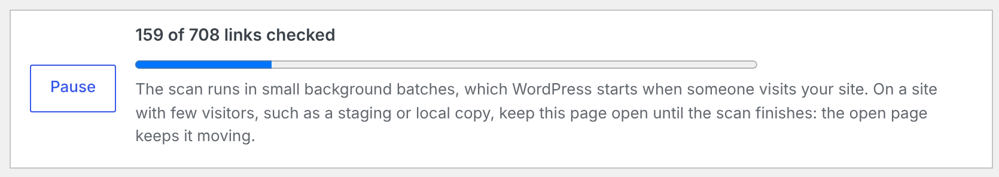
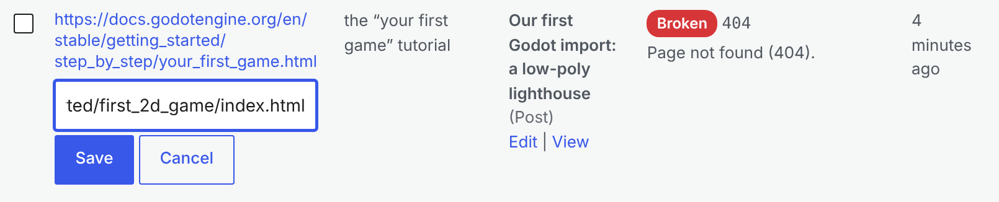
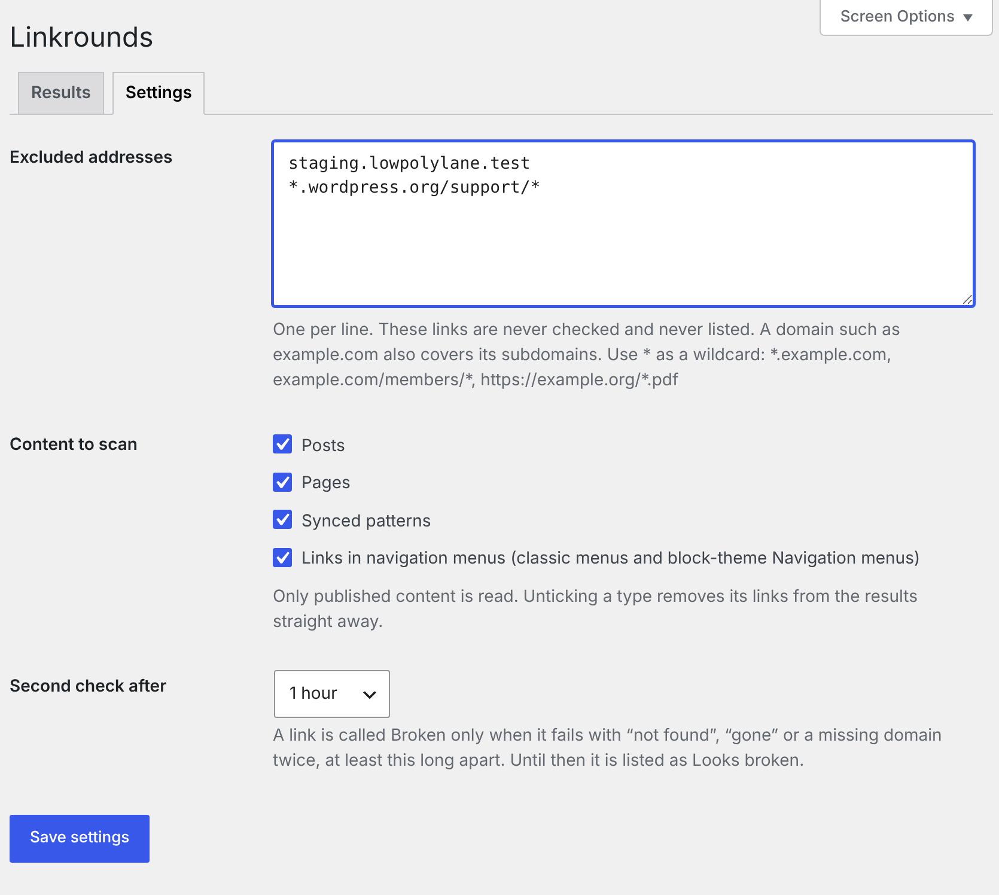

Linkrounds quick start
Installing Linkrounds, your first scan and your first fix, then Linkrounds Pro. Back to the Linkrounds product page.
Install (WordPress 6.5 or newer, PHP 7.4 or newer)
- Download
linkrounds.zip. Do not unzip it. - In WordPress, open Plugins > Add New Plugin, click Upload Plugin, choose the zip, then Install Now and Activate.
- After the first activation a green notice says "Linkrounds is under Tools > Linkrounds. Click Scan now." Click Open Linkrounds in it, or open Tools > Linkrounds yourself. The notice is shown once.
There is nothing to sign up for: no account, no key and no link limit. Once Linkrounds is listed on WordPress.org you will also be able to search for "Linkrounds" under Plugins > Add New Plugin.
First scan
- Click Scan now. Linkrounds reads your published posts, pages, public custom post types, synced patterns, the custom links in classic menus, and block-theme Navigation menus, and checks every link and image in them.
- The count climbs as links are checked ("102 of 708 links checked"), and so do the counts above the results (Broken, Looks broken, OK …). Pause and Resume are next to it.

wp-cron.php. The same goes for the second checks an hour later: on a quiet site, leave the Linkrounds screen open and it runs them when they are due, then reloads to show the result.
The five answers
- Broken: not found (404), gone (410), or the domain does not exist, and the same thing happened again on a second check at least an hour later.
- Looks broken: the same failure, once. The row says when the second check is due ("Second check due after 1:24 am."). It is not counted as Broken or as Inconclusive: it has its own tab, so the tabs add up to All.
- Redirected: the address forwards to one that works. The final address is shown. If it lands on the site's home page or on a search or "not found" page, the reason says so, because sites often do that when a page was removed.
- Inconclusive: the other site blocked the check (403, 999), wanted a login (401), asked us to slow down (429), had a server error or did not answer in time. The reason is given. Inconclusive is never counted as broken, and it never waits for a second check.
- OK: the link works.
So straight after your first scan, Broken shows 0. That does not mean nothing was found: a line above the results says how many addresses look broken (they failed once), and when Linkrounds checks them again by itself, for example "from 8:36 pm (in 57 minutes)". You do not need to scan again, and you can fix those links right away from Looks broken. Those that fail the second check move to Broken. The wait is 1 hour by default; you can choose 6 or 24 hours under Settings.
The line counts different addresses, like the line above it. One dead page linked from five posts is one address in five places, so the line says, for example, "71 different addresses look broken, used in 251 places", and Show all 251 places lists every place, because each one is fixed in its own post. When every address is used once, it simply says "7 links look broken."
![Tools > Linkrounds on The Hook Weekly straight after the first scan: 'Last scan finished November 17, 2026 1:13 am: 708 different addresses checked, used in 2,702 places.', then '71 different addresses look broken, used in 251 places. They failed once and are checked again by themselves from November 17, 2026 2:10 am (in 56 minutes). Each becomes Broken only if it fails again. You can fix them now. Show all 251 places', the tabs All (2,702), Broken (0), Looks broken (251), Redirected (49), Inconclusive (0), OK (2,402), Ignored (0), and the first two rows: php.net manual pages with a yellow Looks broken badge, 404 and 'Page not found (404). Second check due after 2:10 am.'](img/first-scan-archive.png)
Each row shows the page the link is on (with Edit and View), the full address, the link text, the status code, the reason and when it was last checked. Filter by answer or post type, search by address, and use Re-check now on any row.
Fix a link, and undo it
- Hover a row. Choose Edit address, type the new address and click Save; or choose Unlink to remove the link and keep its words.
- The message says what changed. Only that link in that post changes, and an edited address is checked straight away. A File block links to its file twice (the name and the Download button); Edit address on either row changes both, and the message says so.
- To undo, open the post, then Revisions, and restore the version before the change. The old link comes back as a new link, so it waits for its second check again before it is called Broken.


To fix several links at once, tick their rows, pick Unlink or Edit address under Bulk actions and click Apply. Only the rows you ticked change, and the message says what was done (or that nothing was changed). Menu items have no revisions in WordPress; the message after a menu fix says so, and you undo it under Appearance > Menus.
Exclusions and re-checks
- Settings > Excluded addresses: one per line.
example.comalso covers its subdomains;*is a wildcard, as in*.example.comorexample.com/members/*. - Untick post types, synced patterns or menu links you do not want scanned.
- Ignore on a row hides that one link; the Ignored filter lists it and undoes it.
- Broken and Inconclusive links are re-checked every day, and saving a post re-checks its links, so a link you fix in the editor leaves the list without a new scan.

Linkrounds Pro
- Install and activate the free plugin first (above). Pro is an add-on and does nothing without it. Once Pro and the free plugin are both active, a green notice says Pro is on and links to the Schedule & email tab, once.
- Install
linkrounds-pro.zipthe same way: Plugins > Add New Plugin > Upload Plugin, Install Now, Activate. - Open Tools > Linkrounds > Schedule & email. Choose daily, weekly or monthly and the hour (in the time zone set under Settings > General), add the addresses that should get the report, one per line, and save.
- Click Send a test email. Until you click Save schedule, the line beside "Next scheduled scan" says "Not saved yet: click Save schedule.". The message at the top says straight away whether WordPress could send it, and if not, WordPress's own reason (for example "Could not instantiate mail function."). If WordPress sent it but it does not arrive, look in spam, then ask your host about outgoing mail.
- On the Results tab, Export CSV, beside the Filter button, downloads the rows of the current filter, all pages. Menu links are listed as "Menu: name", with the menu editor as the edit link.
![The Plugins screen right after Linkrounds Pro was activated on a site without the free plugin: a yellow notice 'Linkrounds Pro is waiting for the free plugin: install “Linkrounds – Broken Link Checker” first. Pro is an add-on and does nothing on its own. The free plugin is a separate download: 1. Download linkrounds.zip (free) from ochrestack.com/linkrounds. 2. Upload it under Plugins > Add New Plugin > Upload Plugin, click Install Now, then Activate Plugin. Linkrounds Pro starts working as soon as the free plugin is active. You do not need to install Pro again, and your Pro settings are kept.', and below it WordPress's 'Plugin activated.'](img/pro-first.png)
The email report lists each address that broke since the last report once, with why it failed and every page it is on ("Used in 3 places:"), and ends with a link to the Broken view. Its subject counts addresses, and places when there are more: "[Your site] Linkrounds: 10 addresses broke since the last report (used in 24 places)". The first report lists everything that is broken at that time.
The email report is sent after each scheduled scan, once the links that failed have had their second check, through your site's own mail setup. Many hosts need an SMTP plugin before WordPress can send mail; the test email tells you. If your site's mail setup ever refuses a report, the Schedule & email tab shows when and WordPress's reason, a line above the results points to it, and the links it would have listed go into the next report.

Gentle on your server
- The scan runs in small background batches through WordPress's scheduled tasks (WP-Cron), with a live count and Pause and Resume. If the host kills a batch, the scan picks itself up again.
- Links to your own posts, pages and uploads are checked against your own database and files, with no request to your site.
- Each address is requested once per scan, however many posts use it. At most six requests run at once, and at most two go to the same site.
- A batch starts no new request after 10 seconds and ends within about 25. While it waits for answers it barely uses the processor: on our 300-post archive, a 10-second batch used 1.6 to 2.2 seconds of processor time.
- Addresses in private or local networks (10.x, 192.168.x, 127.0.0.1) are never requested, except your own site's address. On a local or staging install your site itself is on such an address, so links to your own site that Linkrounds cannot match to a post, page or upload (an archive, a feed,
/wp-admin/) are requested from it.
How we tested
Everything on this page and on the product page was measured with Linkrounds 1.2.4 and Linkrounds Pro 1.2.1 on WordPress 7.1.4 with PHP 8.3.6, on November 17, 2026 (times are London time, which is UTC in November). Both sites are local, on PHP's built-in server with the SQLite Database Integration plugin; screenshots are from Chromium under a virtual display, the film too. Pro installed first was shown on a fresh WordPress 7.1.4 site. The automated tests and the Upload Plugin install check also ran on WordPress 6.5.14, and on both WordPress versions with PHP 7.4.33 (the oldest PHP the plugins support).
"The Hook Weekly", a 300-post archive
A PHP and WordPress link digest we generated for this test: 300 weekly issues from 2014 to 2019 (297 still published), linking to real php.net, developer.wordpress.org, wordpress.org and GitHub pages, some of which are gone. That is 708 different addresses in 2,702 places (links to codex.wordpress.org, a host our test machine cannot reach, were left out). Nobody else visited the site.
- Scan now took 3 min 3 s with the screen open (one run).
- First scan, 1:13 am: nothing Broken yet. 71 addresses (251 places) failed once, 18 forwarded somewhere (49 places), 619 answered normally (2,402 places), and no site blocked the check.
- We left Tools > Linkrounds open and did nothing. The second checks ran by themselves between 2:11 and 2:14 am: all 71 failed again and became Broken (251 places). At 2:30 am we opened all 71 Broken addresses in a browser: 71 of 71 returned 404. So 0 of the 71 Broken addresses were working.
- Six of the forwards were wordpress.org plugin pages that now land on wordpress.org's plugin search, and the reason says so (below).
- On the Broken view we ticked rows 4 and 12 of 20 and chose Unlink. We compared all 297 posts before and after: exactly 2 posts changed, and in each only the link's own opening and closing tags were removed.
![Two Redirected rows. First: https://wordpress.org/plugins/wp-easy-gallery-old/, 'Ends at: https://wordpress.org/plugins/search/wp-easy-gallery-old/', with the reason 'The address forwards to what looks like a search or “not found” page on the same site. Sites often do this when a page was removed, so open it and check that it is where readers should go.' Second: a developer.wordpress.org function address that forwards to another function's page, 'The address forwards to another address, which works.'](img/redirected-search.png)
"Low Poly Lane", a demo blog
A demo blog of a small 3D studio that we built for these tests: 12 posts and 2 pages from 2019 to 2025, a menu (also as a block-theme Navigation menu), and links to real Blender, Godot and WordPress documentation, some of which has since moved or gone. The film and the screenshots of the results, the fixes and the revisions are from this run.
| Answer | First scan, 1:09 am (63 addresses in 70 places) | After the second checks, 2:09 am | After our four fixes, 2:11 am (61 addresses in 68 places) |
|---|---|---|---|
| Broken | 0 | 8 addresses (10 places) | 4 addresses (6 places) |
| Looks broken | 8 addresses (10 places) | 0 | 0 |
| Redirected | 5 addresses (7 places) | 5 addresses (7 places) | 5 addresses (7 places) |
| Inconclusive | 6 addresses (6 places), all refused the check (403): blender.org and registry.khronos.org | 6 addresses (6 places) | 6 addresses (6 places) |
| OK | 44 addresses (47 places) | 44 addresses (47 places) | 46 addresses (49 places) |
The four fixes were Edit address on two links and a bulk Unlink of two ticked rows. We opened every Broken address by hand with a browser: all seven web pages returned 404, and the image is not in the uploads folder. We opened the six Inconclusive addresses too: blender.org and registry.khronos.org refused our browser as well (403), so those links are honestly Inconclusive. So 0 of the 8 Broken addresses were working.
Pro's daily scan, set for 3:00 am, started on the first visit after it (3:00 am) and finished 10 seconds later. Pro sends the report an hour after the scan; we did not wait for that hour and ran the report step by hand at 3:02 am (the whole email): 2 addresses, used in 3 places, each listed once. Then we switched the mail off to see a refused report, and sent a test email (below).
Limits
- Not checked in version 1: custom fields, page-builder data stored outside the post content, widgets, comments, theme options, excerpts, templates and template parts edited in the Site Editor,
srcsetimage sets, and video or embed addresses. If a builder keeps its links in the post content they are found, but editing inside a builder layout is not offered, and an Unlink inside a third-party builder block can leave that block needing repair. - WP-Cron runs when someone visits the site. On a quiet site, such as a staging or local copy, keep the Linkrounds screen open while it scans (closing it there stops the scan until the next visit), or set up a real cron job for
wp-cron.php. Pro's scheduled scans start on the first visit after the chosen hour. - A site that serves 404 to anything but a browser ends up Broken although readers see the page. Linkrounds says honestly that it is a link checker and does not pretend to be a browser. Open the link; if it works, Ignore it.
- A deleted page that forwards to its site's home page or to a search page is Redirected, not Broken; the reason says where it lands. A "not found" page at an ordinary address still reads as a working redirect, so look at the address it ends at.
- A server that never answers HEAD requests leaves its links Inconclusive ("no answer within 15 seconds"); they are never called Broken.
- A missing file in your uploads folder is checked on disk, so a redirect for an old upload address is not seen. Point the links at the new file with Edit address, or Ignore them.
- Menu items have no revisions in WordPress; the message after a menu fix says so, and you undo it under Appearance > Menus.
- No network-wide view on multisite; it works per site.
- Linkrounds never highlights or strikes through links on your site and adds no dashboard widget.
- "Maximum execution time of 30 seconds exceeded in …/Requests/src/Transport/Curl.php" in your debug log after publishing or importing many posts comes from WordPress's own pingbacks, not Linkrounds. Untick "Attempt to notify any blogs linked to from the post" under Settings > Discussion before a bulk import to avoid it.
Privacy: exactly what is sent
To check a link, Linkrounds sends a HEAD request from your server to the linked address (and a GET when HEAD does not succeed), with the User-Agent Mozilla/5.0 (compatible; Linkrounds/1.0; link check). This happens during a scan, on Re-check now, in the daily re-check, and when you save a post that contains links (from activation, even before the first scan). Addresses in private or local networks are never requested, except your own site's address (see Gentle on your server). Nothing else is sent: no data about your site, your users or your content goes to Ochrestack or to any other service. There is no account, no telemetry and no update or licence check. Pro's email report and test email go only to the addresses you set, through your site's own mail setup (wp_mail()). Results stay in two tables in your own database and are removed when you delete the plugin.
Support
Both plugins' rows on the Plugins screen link this page (Documentation) and the support address. Email support@ochrestack.com with your WordPress and PHP versions, the Linkrounds version, and the address and reason shown on the row that puzzles you.